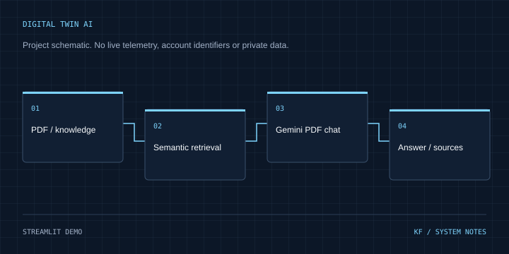

10 / AI ENGINEERING / CASE STUDY
Digital Twin AI
From word embeddings to retrieval-grounded PDF conversations.
Streamlit demo Inspect source on GitHub ↗
Architecture
PDF / knowledge → Semantic retrieval → Gemini PDF chat → Answer / sources
Problem & context
Finding useful information in text and PDFs requires retrieval of relevant context and a clear response when evidence is missing.
Objectives
Combine embedding experiments, knowledge-base retrieval and document question answering in a Streamlit application.
My role & project work
Implemented custom GloVe/search components, a retrieval pipeline with abstention behavior and Gemini-powered PDF chat with conversation context and source references.
Technical implementation
The knowledge-base path chunks text, retrieves similar passages and uses rule-based answer extraction. The PDF path extracts pages, ranks sentence embeddings and supplies selected context to Gemini. These are distinct paths; the knowledge-base demo is not described as generative LLM answering.
Engineering decisions
Keep retrieval and answer generation separate. Preserve source/page information in the PDF path and return an insufficient-information result when the knowledge-base path cannot support an answer.
Challenges & solutions
Scanned PDFs need OCR beyond the current text extractor. Model availability and API quotas affect the PDF path. A retrieval-quality evaluation set is still a useful next step.
Testing & verification
Reviewed pipeline.py, semantic_retriever.py, pdf_chat.py, three unit-test files and the CI workflow at revision 9a9acd80247d87d4bed53355209d14b2ff0a538f. A repository screenshot records 21 passing core tests; that is historical evidence, not a fresh test run in this task. No model request was made.
Current status
Educational Streamlit demo supplied by the owner. Core code and historical test evidence reviewed; live model response quality and current hosted availability were not tested. Browser check on 31 October 2026 reached the Streamlit sleep page. The link is reachable; live model behavior was not tested.
Lessons & next steps
Embedding/search tests and explicit abstention are valuable, but they do not replace evaluation of the complete PDF/Gemini answering path.